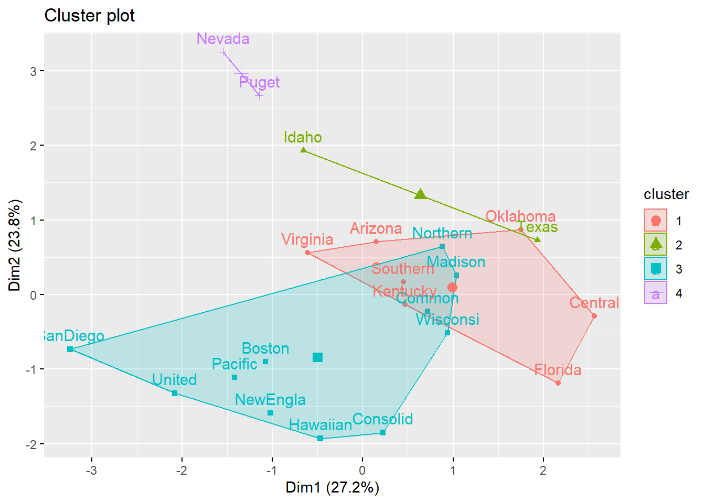
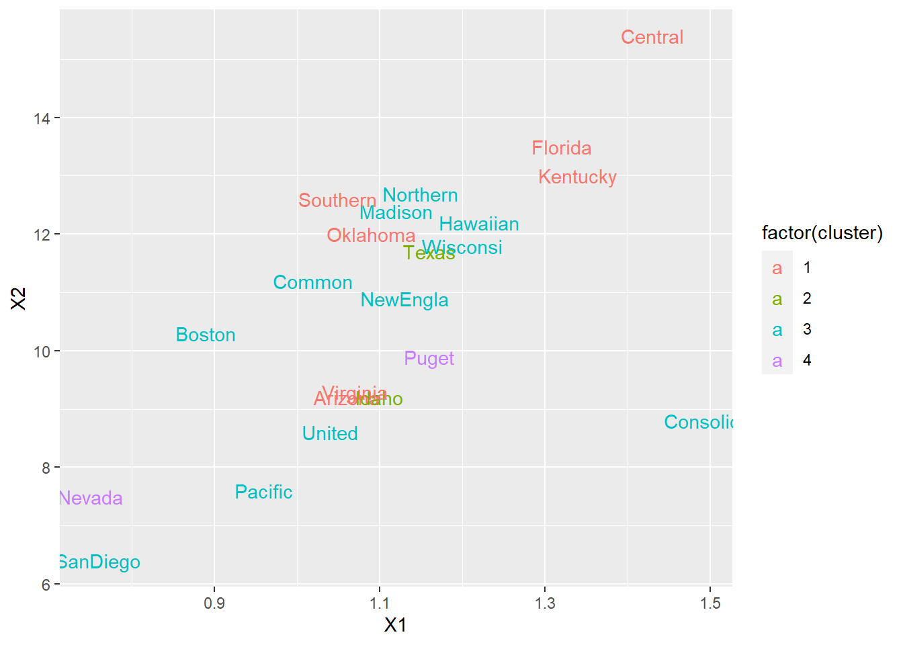
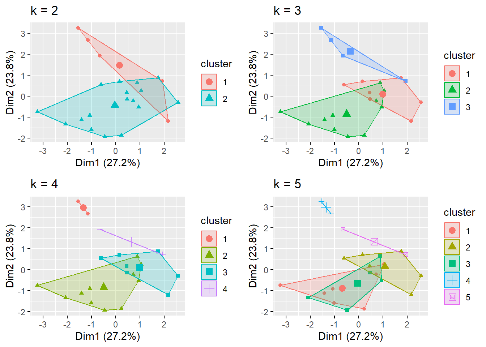

10.6 Métodos NO-Jerárquicos de Partición o Agrupamiento
Las técnicas de agrupamiento no jerárquico están diseñadas para agrupar observaciones en lugar de variables, en una colección de \(K\) grupos o cluster. El número de conglomerados o cluster o grupos \(K\), puede ser especificado de antemano o determinado como parte del proceso de agrupamiento. Debido a que no es necesario determinar la matriz distancias (o similaridades) y los datos básicos no deben almacenarse durante la ejecución del algoritmo, lo métodos no jerárquicos se pueden aplicar a conjuntos de datos mucho más grandes que en las técnicas jerárquicas.
A diferencia de los métodos de clasificación Jerárquicos, estos métodos no-Jararquicos, no han sido muy empleados o examinados, razón por la que se aplican e interpretan, aveces, de una manera poco correcta. Tienen por objetivo realizar una sola partición de los individuos en \(K\) grupos. Lo anterior implica que el investigador debe especificar a priori los grupos que deben ser formados, siendo ésta, posiblemente, la principal diferencia respecto de los métodos jerárquicos, (no obstante hay que señalar que hay diversas versiones de estos procedimientos que flexibilizan un tanto el número final de clusters o grupos a obtener). Otra diferencia de estos métodos respecto a los jerárquicos reside en que trabajan con la matriz de datos original y no precisan su conversión en una matriz de distancias o similaridades.
Los métodos no jerárquicos comienzan a partir de:
- Una partición inicial de elementos en grupos o cluster, o
- Un conjunto inicial de puntos semilla, que forman el núcleo o centroide de los cluster.
Las buenas elecciones para iniciar las configuraciones deben estar libres de sesgos manifiestos. Una manera de empezar es seleccionar aleatoriamente puntos semilla de entre los elementos u observaciones o dividir aleatoriamente los elementos en grupos o cluster iniciales.
En esta sección se analiza uno de los procedimientos de agrupamiento de datos no jerárquicos más populares, el método \(k\)-means o de \(k\)-medias.
10.6.1 Pasos o etapas de un Método de Clasificación No-Jararquico
Empiezan con una partición del conjunto de objetos en algún número específico de grupos, a cada uno de estos grupos se le calcula el centroide.
Ubican cada caso u objeto en el conglomerado cuyo centroide esté más cercano a dicho caso.
Calculan el nuevo centroide de los conglomerados. Los centroides no son actualizados hasta tanto no se comparen sus centroides con todos los casos.
Continúan con los pasos 2 y 3 hasta que los casos resulten irremovibles.
Una diferencia de las técnicas de partición con las técnicas jerárquicas, es que la ubicación de un objeto en un grupo no es definitiva.
Entre las técnicas no-jerárquicas de partición están:
Métodos de las \(k\)-medias
El Quick-Cluster análisis
El Método de Forgy
Métodos basados en la traza
Métodos de Nubes Dinámicas
El Análisis Modal de Wishart
El Método Taxmap
El Método de Fortin
El método Block-Clustering. entre otras.
Ver el siguiente cuadro de clasificación.
\[ \text{Métodos de Análsis Cluster} \begin{cases} \text{Jerarquicos} \begin{cases} \text{Aglomerativos} \begin{cases} \text{Enlace Simple }\\ \text{Enlace Completo}\\ \text{Enlace Promedio}\\ \text{Método del Centroide}\\ \text{Método de la Mediana}\\ \text{Método de Ward} \end{cases}\\ \text{Desaglomerativos} \begin{cases} \text{Enlace Simple }\\ \text{Enlace Completo}\\ \text{Enlace Promedio}\\ \text{Método del Centroide}\\ \text{Método de la Mediana}\\ \text{Método de Ward}\\ \text{Análisis de Asociación}\\ \text{Detector Automático de}\\ \text{Interacción} \end{cases} \end{cases} \\ \text{No Jerarquicos} \begin{cases} \text{Métodos de Reasignación} \begin{cases} \text{Centroides} \begin{cases} \text{K-Medias}\\ \text{Quick-Cluster}\\ \text{Método de Forgy} \end{cases}\\ \text{Nubes Dinámicas} \end{cases}\\ \text{Busqueda de densidad} \begin{cases} \text{Aproximación Tipológica} \begin{cases} \text{Análisis Modal}\\ \text{Método Taxmap}\\ \text{Método de Fortin} \end{cases}\\ \text{Aproximación Probabilística: Método de Wolf} \end{cases}\\ \text{Métodos Directos: Block-Clustering}\\ \text{Métodos Reductivos: Análisis Factorial tipo Q} \end{cases} \end{cases} \]
10.6.2 Método de las \(k\)-Medias o \(k\)-means
MacQueen (1967), sugiere el término \(K\)-medias para describir un algoritmo que asigna cada elemento al grupo que tiene el centroide más cercano. En su versión más simple versión, el proceso se compone de estos tres pasos:
Pasos o Etapas de \(k\)-Medias
Se dividen los elementos en \(K\) grupos iniciales.
Se continúa a través de la lista de elementos, asignando un elemento al grupo cuyo centroide (o media) es lo más cerca. (La distancia generalmente se calcula usando la distancia euclidiana con observaciones estandarizadas o no estandarizadas). Se vuelve a calcular el centroide para el grupo que recibe la nueva observación y para el grupo que lo pierde.
Se repite el Paso 2 hasta que no se realicen más reasignaciones.
En lugar de comenzar con una partición de todas las observaciones en \(K\)-grupos preliminares en el Paso 1, se podrían especificar \(K\)-centroides iniciales (o puntos semilla) y luego proceder al Paso 2.
La asignación final de elementos a los grupos dependerá, hasta cierto punto, de la partición inicial o de la selección inicial de puntos semilla. La experiencia sugiere que la mayoría de los cambios importantes en la asignación ocurren con el primer paso de reasignaciones.
Ejemplo 10.20 (Ejemplo-1 Sobre Cluster Usando k-Medias) Suponga que se miden 2-variables \(X_1\) y \(X_2\) para cada uno de 4 observaciones \(A,B,C,D\) y los datos obtenidos son los siguientes:
\[ \begin{array}{c|cc} & \text{Variables} & \\ \text{Observaciones} & X_1 & X_2 \\\hline A &5 & 3 \\ B &-1 & 1 \\ C &1 & -2 \\ D &-3 & -2 \\\hline \end{array} \]
El objetivo es dividir estos elementos en \(K=2\)-grupos o cluster de modo que los elementos dentro de un grupo estén más cerca entre sí que de aquellos elementos de grupos diferentes. Para implementar el método \(K= 2\)-medias, arbitrariamente se dividen las observaciones en dos grupos, por ejemplo, \((AB)\) y \((CD)\), y se calculan las coordenadas \(\overline{\mathbf{x}}_1\) y \(\overline{\mathbf{x}}_2\) del centroide o media de cada grupo.
Por lo tanto, en el Paso 1, se tiene que: \[ \text{Cluster} \ \ (AB):\ \ \ \overline{\mathbf{x}}_1=\begin{bmatrix} \overline{x}_1 \\ \overline{x}_2 \end{bmatrix}=\begin{bmatrix} \frac{5+(-1)}{2} \\ \frac{3+1}{2} \end{bmatrix}=\begin{bmatrix} 2 \\ 2 \end{bmatrix}\\ \text{Cluster} \ \ (CD):\ \ \ \overline{\mathbf{x}}_2=\begin{bmatrix} \overline{x}_1 \\ \overline{x}_2 \end{bmatrix}=\begin{bmatrix} \frac{1+(-3)}{2} \\ \frac{-2+(-2)}{2} \end{bmatrix}=\begin{bmatrix} -1 \\ -2 \end{bmatrix} \]
Ahora, en el Paso 2, se calculan las distancias euclidianas de cada observación a los centroides y se reasigna cada elemento al grupo que esté más cercano. Si una observación se mueve desde la configuración inicial, los centroides (o medias) del clúster deben ser actualizados antes proceder. La \(i\)-ésima coordenada \(i=1,2,\ldots,p\), del centroide se actualiza fácilmente utilizando las siguientes fórmulas: \[ \overline{x}_{i\ ,\ nuevo}=\frac{n\ \overline{x}_{i}+x_{ji}}{n+1} \ \ , \ \ \ \ \text{si la}\ \ \ j-\text{ésima es adicionada a un grupo}\\ \overline{x}_{i\ ,\ nuevo}=\frac{n\ \overline{x}_{i}-x_{ji}}{n+1} \ \ , \ \ \ \ \text{si la}\ \ \ j-\text{ésima es removidad de un grupo} \]
donde \(n\)-es el número de observaciones en el grupo “viejo” cuyo centroide es: \[ \overline{\mathbf{x}}=\begin{bmatrix} \overline{x}_1 \\ \overline{x}_2 \\ \vdots \\ \overline{x}_p \end{bmatrix} \]
Para el ejemplo, se consideran los cluster iniciales: \((AB)\) y \((CD)\). Las coordenadas de los dos centroides están dadas por: \[ \text{Cluster} \ \ (AB):\ \ \ \overline{\mathbf{x}}_1=\begin{bmatrix} \overline{x}_1 \\ \overline{x}_2 \end{bmatrix}=\begin{bmatrix} 2 \\ 2 \end{bmatrix}\\ \text{Cluster} \ \ (CD):\ \ \ \overline{\mathbf{x}}_2=\begin{bmatrix} \overline{x}_1 \\ \overline{x}_2 \end{bmatrix}=\begin{bmatrix} -1 \\ -2 \end{bmatrix} \]
Supongamos por ejemplo, que la observación \(A\) con coordenadas \((5,3)\)-se mueve al grupo \((CD)\). Entonces los nuevos grupos son: \((B)\) y \((ACD)\), cuyos centroides actualizados son: \[ \text{Cluster} \ \ (B):\ \ \ \overline{\mathbf{x}}_1=\begin{bmatrix} \overline{x}_{1\ ,\ nuevo} \\ \overline{x}_{2\ ,\ nuevo} \end{bmatrix}=\begin{bmatrix} \frac{n\ \overline{x}_{i}-x_{ji}}{n-1} \\ \frac{n\ \overline{x}_{i}-x_{ji}}{n-1} \end{bmatrix}=\begin{bmatrix} \frac{2(2)-5}{2-1} \\ \frac{2(2)-3}{2-1} \end{bmatrix}=\begin{bmatrix} -1\\ 1\end{bmatrix} \\ \text{Cluster} \ \ (ACD):\ \ \ \overline{\mathbf{x}}_2=\begin{bmatrix} \overline{x}_{1\ ,\ nuevo} \\ \overline{x}_{2\ ,\ nuevo} \end{bmatrix}=\begin{bmatrix} \frac{n\ \overline{x}_{i}+x_{ji}}{n+1} \\ \frac{n\ \overline{x}_{i}+x_{ji}}{n+1} \end{bmatrix}=\begin{bmatrix} \frac{2(-1)+5}{2+1} \\ \frac{2(-2)+3}{2+1} \end{bmatrix}=\begin{bmatrix} 1\\ -\frac{1}{3}\end{bmatrix} \]
Retornamos a los grupos iniciales del ejemplo, en el paso-1, se calculan las distancias al cuadrado dadas por: \[ \text{Si A-no es movido:} \ \ \ \begin{cases} d^2\biggl((A\ ,\ (AB)\biggr)=(5-2)^2+(3-2)^2=10 \\ d^2\biggl((A\ ,\ (CD)\biggr)=(5+1)^2+(3+2)^2=61\end{cases} \\ \text{Si A es movido a (CD):} \ \ \ \begin{cases} d^2\biggl((A\ ,\ (B)\biggr)=(5+1)^2+(3-1)^2=40 \\ d^2\biggl((A\ ,\ (ACD)\biggr)=(5-1)^2+(3+0.33)^2=27.09\end{cases} \]
Como \(A\)-está más cerca al centro de \((AB)\) que al centro de \((ACD)\), entonces \(A\)-no es movido del grupo inicial.
Ahora se continua con la reasignación de \(B\): \[ \text{Si B-no es movido:} \ \ \ \begin{cases} d^2\biggl((B\ ,\ (AB)\biggr)=(-1-2)^2+(1-2)^2=10 \\ d^2\biggl((B\ ,\ (CD)\biggr)=(-1+1)^2+(1+2)^2=9\end{cases} \\ \text{Si B es movido a (CD):} \ \ \ \begin{cases} d^2\biggl((B\ ,\ (A)\biggr)=(-1-5)^2+(1-3)^2=40 \\ d^2\biggl((B\ ,\ (BCD)\biggr)=(-1+1)^2+(1+1)^2=4\end{cases} \]
Como \(B\)-está más cercano al centro del grupo \(BCD\) que al centro del grupo \(AB\), entonces \(B\)-es reasignado al grupo \((CD)\).
Ahora se tienen los grupos: \((A)\) y \((BCD)\), cuyas coordenadas de los centroides son: \[ \text{Cluster} \ \ (A):\ \ \ \overline{\mathbf{x}}_1=\begin{bmatrix} \overline{x}_{1\ ,\ nuevo} \\ \overline{x}_{2\ ,\ nuevo} \end{bmatrix}=\begin{bmatrix} \frac{n\ \overline{x}_{i}-x_{ji}}{n-1} \\ \frac{n\ \overline{x}_{i}-x_{ji}}{n-1} \end{bmatrix}=\begin{bmatrix} \frac{2(2)-(-1)}{2-1} \\ \frac{2(2)-1}{2-1} \end{bmatrix}=\begin{bmatrix} 5\\ 3\end{bmatrix} \\ \text{Cluster} \ \ (BCD):\ \ \ \overline{\mathbf{x}}_2=\begin{bmatrix} \overline{x}_{1\ ,\ nuevo} \\ \overline{x}_{2\ ,\ nuevo} \end{bmatrix}=\begin{bmatrix} \frac{n\ \overline{x}_{i}+x_{ji}}{n+1} \\ \frac{n\ \overline{x}_{i}+x_{ji}}{n+1} \end{bmatrix}=\begin{bmatrix} \frac{2(-1)+(-1)}{2+1} \\ \frac{2(-2)+1}{2+1} \end{bmatrix}=\begin{bmatrix} -1\\ -1\end{bmatrix} \]
Se realiza el chequeo por posibles reasignación de \(C\): \[ \text{Si C-no es movido:} \ \ \ \begin{cases} d^2\biggl((C\ ,\ (A)\biggr)=(1-5)^2+(-2-3)^2=41 \\ d^2\biggl((C\ ,\ (BCD)\biggr)=(1+1)^2+(-2+1)^2=5\end{cases} \\ \text{Si C es movido a (A):} \ \ \ \begin{cases} d^2\biggl((C\ ,\ (AC)\biggr)=(1-3)^2+(-2-0.5)^2=10.25 \\ d^2\biggl((C\ ,\ (BD)\biggr)=(1+2)^2+(-2+0.5)^2=11.5\end{cases} \]
Como \(C\)-está más cerca al centro del grupo \(BCD\) que al centro del grupo \(AC\), entonces \(C\)-No es reasignado al grupo \((A)\).
Siguiendo de esta manera, se encuentra que no hay más reasignaciones a tener en cuenta y los grupos \(K=2\)-cluster o grupos finales son: \((A)\) y \((BCD)\).
Para los grupos o cluster finales, se tiene que:
| Distancias Cuadráticas a Los Centroides de cada Grupo |
|---|
| Cluster | A | B | C | D |
|---|---|---|---|---|
| A | 0 | 40 | 41 | 89 |
| (BCD) | 52 | 4 | 5 | 5 |
Las sumas de cuadrados dentro de cada cluster (sumas de distancias cuadráticas al centroide) son: \[ \text{Cluster-A}: 0\\ \text{Cluster-(BCD)}: 4+5+5=14 \]
Otro criterio para formar los \(K=2\)-cluster es usar: \[ \min \biggl( E=\sum_{i}\ d_{i\ ,\ c(i)}^2 \biggr) \]
donde el mínimo es sobre el número de \(K=2\)-cluster y \(d_{i\ ,\ c(i)}^2\)-es la distancia cuadrática desde la observación \(i\)-ésima al centroide (o media) del cluster asignado. En el ejemplo, se tiene que existen 7-posibilidades para formar \(K=2\)-cluster: \[ A,(BCD)\\ B,(ACD)\\ C,(ABD)\\ D,(ABC)\\ (AB),(CD)\\ (AC),(BD)\\ (AD),(BC) \]
Para la pareja de cluster dada por: \(A\), \((BCD)\)-se tiene que: \[ A: \ \ \ d^2_{A,c(A)}=d_{A,A}^2=0\\ (BCD): \ \ d_{B,(BCD)}^2+d_{C,(BCD)}^2+d_{D,(BCD)}^2=4+5+5=14 \]
de donde: \[ \sum_{i}\ d_{i,c(i)}^2=0+14=14 \]
Para el resto de pares posibles de luster se puede verificar que: \[ B,(ACD)\ \ : \ \ \sum_{i}\ d_{i,c(i)}^2=49.7 \\ C,(ABD)\ \ : \ \ \sum_{i}\ d_{i,c(i)}^2=27.7 \\ D,(ABC)\ \ : \ \ \sum_{i}\ d_{i,c(i)}^2=31.3 \\ (AB),(CD)\ \ : \ \ \sum_{i}\ d_{i,c(i)}^2=28 \\ (AC),(BD)\ \ : \ \ \sum_{i}\ d_{i,c(i)}^2=27 \\ (AD),(BC)\ \ : \ \ \sum_{i}\ d_{i,c(i)}^2=51.3 \]
y debido a que la suma más pequeña corresponde al par de clusatr: \(A\) y \(BCD\), ésta se toma como la partición final.
Nota: Para comprobar la estabilidad del Agrupamiento seleccionado, es deseable volver a ejecutar el algoritmo con una nueva partición inicial. Una vez que se determinan los grupos, las intuiciones relativas a sus interpretaciones ayudan al reorganizar la lista de observaciones de modo que los del primer grupo aparecen primero, los del segundo grupo aparecen a continuación, y así sucesivamente. Una tabla de los centroides (o medias) de los grupos y las varianzas dentro del grupo también ayudan a delinear las diferencias entre grupos.
Ejemplo 10.21 (Ejemplo-2 Sobre Agrupamiento con el Método de k-Medias) Datos recopilados sobre 22 empresas de servicios públicos de Estados Unidos para el año 1975 se enumeran en la tabla que sigue. Aunque es más interesante agrupar las empresas o compañías en grupos, acá veremos cómo se pueden usar los algoritmos de agrupameinto para agrupar variables. La similaridad entre pares de variables es medida por el coeficiente de correlación momento-producto.
| X1 | X2 | X3 | X4 | X5 | X6 | X7 | X8 | |
|---|---|---|---|---|---|---|---|---|
| Arizona | 1.06 | 9.2 | 151 | 54.4 | 1.6 | 9077 | 0.0 | 0.628 |
| Boston | 0.89 | 10.3 | 202 | 57.9 | 2.2 | 5088 | 25.3 | 1.555 |
| Central | 1.43 | 15.4 | 113 | 53.0 | 3.4 | 9212 | 0.0 | 1.058 |
| Common | 1.02 | 11.2 | 168 | 56.0 | 0.3 | 6423 | 34.3 | 0.700 |
| Consolid | 1.49 | 8.8 | 192 | 51.2 | 1.0 | 3300 | 15.6 | 2.044 |
| Florida | 1.32 | 13.5 | 111 | 60.0 | -2.2 | 11127 | 22.5 | 1.241 |
| Hawaiian | 1.22 | 12.2 | 175 | 67.6 | 2.2 | 7642 | 0.0 | 1.652 |
| Idaho | 1.10 | 9.2 | 245 | 57.0 | 3.3 | 13082 | 0.0 | 0.309 |
| Kentucky | 1.34 | 13.0 | 168 | 60.4 | 7.2 | 8406 | 0.0 | 0.862 |
| Madison | 1.12 | 12.4 | 197 | 53.0 | 2.7 | 6455 | 39.2 | 0.623 |
| Nevada | 0.75 | 7.5 | 173 | 51.5 | 6.5 | 17441 | 0.0 | 0.768 |
| NewEngla | 1.13 | 10.9 | 178 | 62.0 | 3.7 | 6154 | 0.0 | 1.897 |
| Northern | 1.15 | 12.7 | 199 | 53.7 | 6.4 | 7179 | 50.2 | 0.527 |
| Oklahoma | 1.09 | 12.0 | 96 | 49.8 | 1.4 | 9673 | 0.0 | 0.588 |
| Pacific | 0.96 | 7.6 | 164 | 62.2 | -0.1 | 6468 | 0.9 | 1.400 |
| Puget | 1.16 | 9.9 | 252 | 56.0 | 9.2 | 15991 | 0.0 | 0.620 |
| SanDiego | 0.76 | 6.4 | 136 | 61.9 | 9.0 | 5714 | 8.3 | 1.920 |
| Southern | 1.05 | 12.6 | 150 | 56.7 | 2.7 | 10140 | 0.0 | 1.108 |
| Texas | 1.16 | 11.7 | 104 | 54.0 | -2.1 | 13507 | 0.0 | 0.636 |
| Wisconsi | 1.20 | 11.8 | 148 | 59.9 | 3.5 | 7287 | 41.1 | 0.702 |
| United | 1.04 | 8.6 | 204 | 61.0 | 3.5 | 6650 | 0.0 | 2.116 |
| Virginia | 1.07 | 9.3 | 174 | 54.3 | 5.9 | 10093 | 26.6 | 1.306 |
Las variables medidas son:
\(X_1\)_ Tasa de cobertura de carga fija (ingresos/deuda).
\(X_2\): Tasa de rendimiento del capital.
\(X_3\): Costo por KW de capacidad instalada.
\(X_4\): Factor de carga anual.
\(X_5\): Crecimiento máximo de la demanda de kWh desde 1974 a 1975.
\(X_6\): Ventas (kWh uso por año).
\(X_7\): Porcentaje nuclear.
\(X_8\): Costos totales de combustible (centavos por kWh).
La matriz de correlación esta dada por: \[ \begin{array}{c|cccccccc} &X_1&X_2&X_3&X_4&X_5&X_6&X_7&X_8\\\hline X_1 & 1 & & & & &&&\\ X_2 & 0.643 & 1 & &&&&&\\ X_3 & -0.103 & -0.348 &1&&&&&\\ X_4 &-0.082 & -0.086 & 0.1 &1&&&&\\ X_5 & -0.259 & -0.26 & 0.435 & 0.033 & 1 &&&\\ X_6 & -0.152 & -0.01 & 0.028 & -0.288 & 0.176 &1&&\\ X_7 & 0.045 & 0.211 & 0.115 & -0.164 & -0.019 &-0.374&1& \\ X_8 & -0.013 & -0.328 & 0.005 & 0.486 & -0.007 &-0.561&-0.185&1 \end{array} \]
Cuando las correlaciones muestrales se utilizan como medidas de similaridad, las variables con correlaciones negativas grandes se consideran muy diferentes; mientras que las variables con correlaciones positivas grandes se consideran muy similares. En este caso, la “distancia” entre los cluster se miden como la similaridad más pequeña entre los miembros de los cluster correspondientes.

